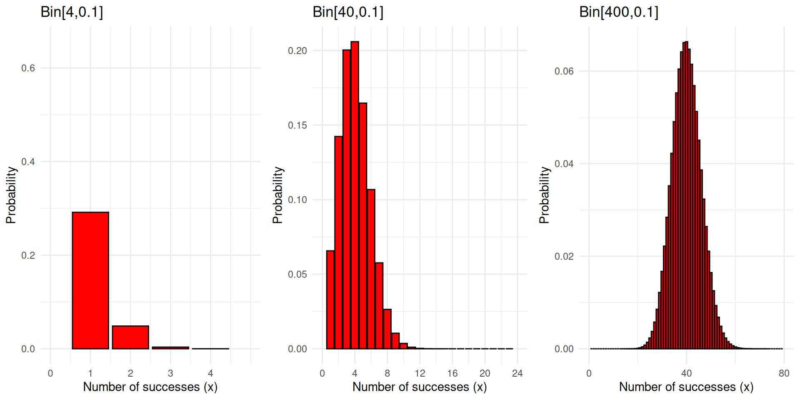

Day 9
Math 216: Statistical Thinking
Introduction to Binomial Random Variables
-
Context of Binomial Experiments:
- Used to model situations with two distinct outcomes.
- Example: Flipping a coin results in either a Head (Success, \(S\)) or Tail (Failure, \(F\)).
Two Possible Outcomes:
- Success \((S)\)
- Failure \((F)\)
Consistent Probability:
- Probability of success \((p)\)
- Probability of failure \((q = 1 - p)\)
Characteristics of Binomial Experiments
-
Essential Features:
- Fixed Number of Trials \((n)\): Each experiment consists of \(n\) identical and independent trials.
- Stable Probabilities: The probability of success \((p)\) and failure \((q = 1 - p)\) remains constant across trials.
Key Points:
- Independence of Trials: Each trial’s outcome does not influence another.
- Identical Trials: All trials follow the same probability model.
The Binomial Random Variable
-
Defining the Variable:
- A binomial random variable \(X\) counts the number of successes in \(n\) trials.
- Notation: \(X \sim \operatorname{Bin}(n, p)\), where \(p\) is the probability of a success on any given trial.
Understanding \(X\):
- Represents the sum of successes in the experiment.
- Can take values from 0 (no success) to \(n\) (all successes).
The Binomial Probability Formula
-
Calculating Probabilities:
- The probability of exactly \(x\) successes in \(n\) trials is given by the binomial formula:
\[ P(x) = \binom{n}{x} p^x q^{n-x}, \quad x = 0, 1, 2, \ldots, n \]
Components:
- \(\binom{n}{x}\): The number of ways to choose \(x\) successes from \(n\) trials.
- \(p^x\): The probability of \(x\) successes.
- \(q^{n-x}\): The probability of \(n-x\) failures.
Refer to Activity 3. Use the formula for a binomial random variable to find the probability distribution of \(x\), where \(x\) is the number of adults who pass the fitness test.
\[\begin{align*} \begin{aligned} & p(0)=\frac{4!}{0!(4-0)!}(.1)^0(.9)^{4-0}=\frac{4 \cdot 3 \cdot 2 \cdot 1}{(1)(4 \cdot 3 \cdot 2 \cdot 1)}(.1)^0(.9)^4=1(.1)^0(.9)^4=.6561 \\ & p(1)=\frac{4!}{1!(4-1)!}(.1)^1(.9)^{4-1}=\frac{4 \cdot 3 \cdot 2 \cdot 1}{(1)(3 \cdot 2 \cdot 1)}(.1)^1(.9)^3=4(.1)(.9)^3=.2916 \\ & p(2)=\frac{4!}{2!(4-2)!}(.1)^2(.9)^{4-2}=\frac{4 \cdot 3 \cdot 2 \cdot 1}{(2 \cdot 1)(2 \cdot 1)}(.1)^2(.9)^2=6(.1)^2(.9)^2=.0486 \\ & p(3)=\frac{4!}{3!(4-3)!}(.1)^3(.9)^{4-3}=\frac{4 \cdot 3 \cdot 2 \cdot 1}{(3 \cdot 2 \cdot 1)(1)}(.1)^3(.9)^1=4(.1)^3(.9)=.0036 \\ & p(4)=\frac{4!}{4!(4-4)!}(.1)^4(.9)^{4-4}=\frac{4 \cdot 3 \cdot 2 \cdot 1}{(4 \cdot 3 \cdot 2 \cdot 1)(1)}(.1)^4(.9)^0=1(.1)^4(.9)=.0001 \end{aligned} \end{align*}\]
Based on the above result, what is \(P(X<3), P(X \geq 2), P(1 \leq X<3)\)?
Observations on Binomial Distributions
-
Unimodal Distribution:
- Regardless of the value of \(p\), the distribution exhibits a single peak.
-
Skewness Based on ( p ):
- Right Skew (p < 0.5): The distribution skews to the right, indicating more low-value outcomes.
- Symmetry (p = 0.5): The distribution is symmetric, with equal probabilities on both sides of the mean.
- Left Skew (p > 0.5): The distribution skews to the left, indicating more high-value outcomes.

As \(n\) increases, the binomial distribution approximates a bell-shaped curve.
Statistics of Binomial Distribution
Statistical Properties:
- Mean (\(\mu\)): \(\mu = np\)
- Variance (\(\sigma^2\)): \(\sigma^2 = np(1-p)\)
- Standard Deviation (\(\sigma\)): \(\sigma = \sqrt{np(1-p)}\)
Insights:
- The mean indicates the expected number of successes.
- Variance and standard deviation provide insight into the spread of the distribution around the mean.